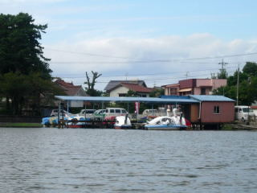

浮布池
2008/09/27
浮布池で白鳥ボートに乗りました。

1時間1000円でした。1回1000円と思うと高い気がしましたが、複数人乗って1時間遊んで1000円だと思ったら妥当ですね。
お子さん連れの家族にお勧めです。
今日は風が弱かったので、快適に白鳥号（水上自転車）が進みました。
浮布池はわりと広いですので、沢山漕げます。
山の中で自然がいっぱいな為、景色もいいです。
島根県大田市三瓶町
2008/09/27
浮布池で白鳥ボートに乗りました。

1時間1000円でした。1回1000円と思うと高い気がしましたが、複数人乗って1時間遊んで1000円だと思ったら妥当ですね。
お子さん連れの家族にお勧めです。
今日は風が弱かったので、快適に白鳥号（水上自転車）が進みました。
浮布池はわりと広いですので、沢山漕げます。
山の中で自然がいっぱいな為、景色もいいです。